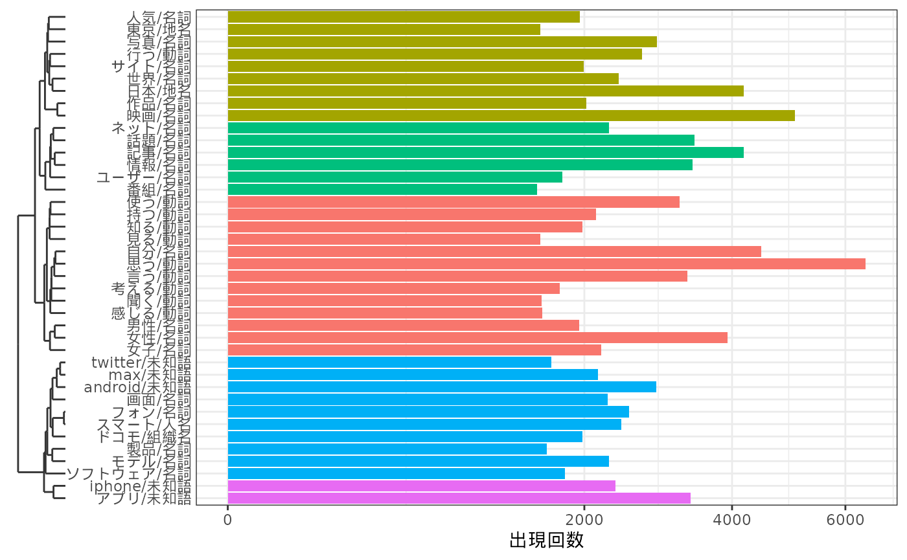

Text Mining with quanteda and gibasa
paithiov909
2024-03-23
Source:vignettes/quanteda.Rmd
quanteda.Rmdはじめに
このページでは、quantedaとgibasaを用いた簡単なテキストマイニングを例に、quantedaやその他のRパッケージとのあいだでテキストデータをやりとりする方法を紹介します。ここでおこなっているようなテキスト分析の例としては、次のサイトも参考にしてください。
ちなみに、quantedaはstringiをラップした関数によって日本語の文書でも分かち書きできるので、手元の辞書に収録されている表現どおりに分かち書きしたい場合や、品詞情報が欲しい場合でないかぎりは、形態素解析器を使うメリットはあまりないかもしれません。stringiが利用しているICUのBoundary Analysisの仕様については、UAX#29などを参照してください。
Text Interchange Formats（TIF）
gibasaによる形態素解析の結果をquantedaなどと組み合わせて使ううえでは、Text Interchange Formats（TIF）という仕様に沿ったかたちのオブジェクトとしてテキストデータをもつことを意識すると便利です。
TIFというのは、2017年にrOpenSci Text Workshopで整備された、テキスト分析用のRパッケージのデザインパターンのようなものです。TIFでは、コーパス（corpus）、トークン（token）、文書単語行列（dtm）という3種類のオブジェクトの形式が定義されており、異なるパッケージ間で同様の形式を扱うようにすることで、複数のパッケージを通じて便利にテキスト分析を進められるようになっています。
このうち「コーパス」は、文書の集合をデータフレームあるいは名前付きベクトルの形式で保持したものです。
ldccrでは、livedoorニュースコーパスをデータフレームの形式のコーパスとして読み込むことができます。より厳密に言うと、データフレーム形式のコーパスは、少なくともdoc_idとtextという列を含むデータフレームなので、doc_id列は自分でつくる必要があります。コーパスにおけるdoc_id列は、文書によって一意なID列（character型である必要がある）で、text列は文書本体になります。「少なくとも」なので、このほかの列にここでのcategory列のような文書のメタ情報などが含まれる場合があります。
tbl <- ldccr::read_ldnws() |>
dplyr::mutate(doc_id = as.character(dplyr::row_number())) |>
dplyr::rename(text = body)
#> Parsing dokujo-tsushin...
#> Parsing it-life-hack...
#> Parsing kaden-channel...
#> Parsing livedoor-homme...
#> Parsing movie-enter...
#> Parsing peachy...
#> Parsing smax...
#> Parsing sports-watch...
#> Parsing topic-news...
#> Done.
tbl
#> # A tibble: 7,376 × 6
#> category file_path source time_stamp text doc_id
#> <fct> <chr> <chr> <chr> <chr> <chr>
#> 1 dokujo-tsushin /tmp/Rtmp7VBWin/text/dokujo-ts… http:… 2010-05-2… "友… 1
#> 2 dokujo-tsushin /tmp/Rtmp7VBWin/text/dokujo-ts… http:… 2010-05-2… "ネ… 2
#> 3 dokujo-tsushin /tmp/Rtmp7VBWin/text/dokujo-ts… http:… 2010-05-2… "相… 3
#> 4 dokujo-tsushin /tmp/Rtmp7VBWin/text/dokujo-ts… http:… 2010-05-2… "ム… 4
#> 5 dokujo-tsushin /tmp/Rtmp7VBWin/text/dokujo-ts… http:… 2010-05-2… "税… 5
#> 6 dokujo-tsushin /tmp/Rtmp7VBWin/text/dokujo-ts… http:… 2010-05-3… "読… 6
#> 7 dokujo-tsushin /tmp/Rtmp7VBWin/text/dokujo-ts… http:… 2010-05-2… "大… 7
#> 8 dokujo-tsushin /tmp/Rtmp7VBWin/text/dokujo-ts… http:… 2010-05-2… "結… 8
#> 9 dokujo-tsushin /tmp/Rtmp7VBWin/text/dokujo-ts… http:… 2010-05-2… "お… 9
#> 10 dokujo-tsushin /tmp/Rtmp7VBWin/text/dokujo-ts… http:… 2010-05-3… "初… 10
#> # ℹ 7,366 more rowslivedoorニュースコーパスは文書分類をおこなうことを主な目的につくられたデータセットで、以下の9カテゴリのブログ記事からなっています。
- トピックニュース
- Sports Watch
- ITライフハック
- 家電チャンネル
- MOVIE ENTER
- 独女通信
- エスマックス
- livedoor HOMME
- Peachy
このうち一部だけをgibasaで形態素解析して、データフレームの形式の「トークン」としてもっておきます。トークンは、コーパスを文書ごとに適当な単位にまとめあげながら格納したものです。それぞれのトークンは単語だったり、単語のN-gramだったりします。
ここではKH Coderで採用されている品詞体系を参考に、形態素解析された語の品詞情報を適当な値に置き換えています。なお、こうしたデータフレームの形式のトークンは、しばしばtidy textとも呼ばれます。
toks <- tbl |>
dplyr::select(doc_id, category, text) |>
dplyr::slice_sample(prop = .8) |>
dplyr::mutate(
text = stringi::stri_trans_nfkc(text) |>
stringi::stri_replace_all_regex("(https?\\://[[:alnum:]\\.\\-_/]+)", "\nURL\tタグ\n") |>
stringi::stri_replace_all_regex("[\\s]{2,}", "\n") |>
stringi::stri_trim_both()
) |>
gibasa::tokenize(text, partial = TRUE) |>
gibasa::prettify(
col_select = c("POS1", "POS2", "POS3", "Original")
) |>
dplyr::mutate(
pos = dplyr::case_when(
(POS1 == "タグ") ~ "タグ",
(is.na(Original) & stringr::str_detect(token, "^[[:alpha:]]+$")) ~ "未知語",
(POS1 == "感動詞") ~ "感動詞",
(POS1 == "名詞" & POS2 == "一般" & stringr::str_detect(token, "^[\\p{Han}]{1}$")) ~ "名詞C",
(POS1 == "名詞" & POS2 == "一般" & stringr::str_detect(token, "^[\\p{Hiragana}]+$")) ~ "名詞B",
(POS1 == "名詞" & POS2 == "一般") ~ "名詞",
(POS1 == "名詞" & POS2 == "固有名詞" & POS3 == "地域") ~ "地名",
(POS1 == "名詞" & POS2 == "固有名詞" & POS3 == "人名") ~ "人名",
(POS1 == "名詞" & POS2 == "固有名詞" & POS3 == "組織") ~ "組織名",
(POS1 == "名詞" & POS2 == "形容動詞語幹") ~ "形容動詞",
(POS1 == "名詞" & POS2 == "ナイ形容詞語幹") ~ "ナイ形容詞",
(POS1 == "名詞" & POS2 == "固有名詞") ~ "固有名詞",
(POS1 == "名詞" & POS2 == "サ変接続") ~ "サ変名詞",
(POS1 == "名詞" & POS2 == "副詞可能") ~ "副詞可能",
(POS1 == "動詞" & POS2 == "自立" & stringr::str_detect(token, "^[\\p{Hiragana}]+$")) ~ "動詞B",
(POS1 == "動詞" & POS2 == "自立") ~ "動詞",
(POS1 == "形容詞" & stringr::str_detect(token, "^[\\p{Hiragana}]+$")) ~ "形容詞B",
(POS1 == "形容詞" & POS2 == "非自立") ~ "形容詞（非自立）",
(POS1 == "形容詞") ~ "形容詞",
(POS1 == "副詞" & stringr::str_detect(token, "^[\\p{Hiragana}]+$")) ~ "副詞B",
(POS1 == "副詞") ~ "副詞",
(POS1 == "助動詞" & Original %in% c("ない", "まい", "ぬ", "ん")) ~ "否定助動詞",
.default = "その他"
)
) |>
dplyr::select(doc_id, category, token_id, token, pos, Original) |>
dplyr::rename(original = Original)
toks
#> # A tibble: 3,915,857 × 6
#> doc_id category token_id token pos original
#> <fct> <fct> <int> <chr> <chr> <chr>
#> 1 2736 livedoor-homme 1 < サ変名詞 NA
#> 2 2736 livedoor-homme 2 コラム 名詞 コラム
#> 3 2736 livedoor-homme 3 > サ変名詞 NA
#> 4 2736 livedoor-homme 4 名手 名詞 名手
#> 5 2736 livedoor-homme 5 が その他 が
#> 6 2736 livedoor-homme 6 愛し 動詞 愛す
#> 7 2736 livedoor-homme 7 た その他 た
#> 8 2736 livedoor-homme 8 パター 名詞 パター
#> 9 2736 livedoor-homme 9 【 その他 【
#> 10 2736 livedoor-homme 10 ゴルフ 名詞 ゴルフ
#> # ℹ 3,915,847 more rowsTidy textからdfmへの変換
さて、実際にこういったトークンからさまざまな分析をするには、トークンを品詞などによって取捨選択しながら、分析したい単位ごとにグルーピングして集計する必要があります。
簡単に集計するだけであれば、次のようにdplyrの関数を使って集計することができます。こうした文書ID、単語と、単語の文書内頻度の3つ組のかたちをしたデータフレームは、summarized textという呼び方をすることがあるようです。
toks |>
dplyr::filter(!pos %in% c("その他", "タグ")) |>
dplyr::count(doc_id, token) |>
dplyr::arrange(dplyr::desc(n))
#> # A tibble: 1,035,532 × 3
#> doc_id token n
#> <fct> <chr> <int>
#> 1 5681 / 607
#> 2 5681 ソフトバンク 508
#> 3 5196 / 204
#> 4 5081 , 126
#> 5 5544 ) 120
#> 6 5544 ( 119
#> 7 1461 し 111
#> 8 5699 : 101
#> 9 5699 . 97
#> 10 5134 HTC 94
#> # ℹ 1,035,522 more rows一方で、たとえば、特定のトークンの連なりは連語と見なして一つのトークンとして集計したいといった場合には、dplyrだけで集計するのはなかなか大変です。そういったより複雑なケースでは、quantedaの枠組みと組み合わせて使ったほうが便利なことがあります。
たとえば、IPA辞書では正しく解析されない「スマートフォン」といった語について、形態素解析した結果を確認した後に再度まとめあげて集計したい場合、quantedaを使うと次のように書くことができます。また、ここでは、うまく「記号」として解析されなかった記号類を除外するために、正規表現にマッチするトークンだけに絞り込んで集計しています。
dfm <- toks |>
dplyr::filter(!pos %in% c("その他", "タグ")) |>
gibasa::pack() |>
quanteda::corpus() |>
quanteda::tokens(what = "fastestword", remove_url = TRUE) |>
quanteda::tokens_compound(
quanteda::phrase(c("スマート フォン", "s - max"))
) |>
quanteda::tokens_keep(
"^[[:alnum:]]{2,}$",
valuetype = "regex"
) |>
quanteda::dfm()
dfm
#> Document-feature matrix of: 5,900 documents, 57,383 features (99.74% sparse) and 0 docvars.
#> features
#> docs コラム 名手 愛し パター ゴルフ 特集 パッティング 持つ 不思議 難し
#> 2736 1 8 1 18 12 2 9 2 2 1
#> 2838 0 0 0 0 0 0 0 1 0 0
#> 3570 0 0 0 0 0 1 0 0 0 0
#> 1524 0 0 0 0 0 0 0 0 0 0
#> 3643 0 0 0 0 0 0 0 0 0 0
#> 7150 0 0 1 0 0 0 0 0 0 0
#> [ reached max_ndoc ... 5,894 more documents, reached max_nfeat ... 57,373 more features ]quanteda::dfm()の戻り値は「文書単語行列（dtm）」を疎行列オブジェクト（dgCMatrix
of ‘Matrix’
package）として保持したものです（厳密には、dgCMatrixをスロットにもっているS4オブジェクト）。dfmオブジェクトは、qunateda.textstats::textstat_frequency()などを使って、さらに集計することができます。
dat <- dfm |>
quanteda.textstats::textstat_frequency() |>
dplyr::as_tibble()
head(dat)
#> # A tibble: 6 × 5
#> feature frequency rank docfreq group
#> <chr> <dbl> <dbl> <dbl> <chr>
#> 1 する 21936 1 5200 all
#> 2 ない 20669 2 4681 all
#> 3 なっ 8733 3 3936 all
#> 4 ある 7426 4 3317 all
#> 5 なる 6648 5 3285 all
#> 6 できる 6344 6 2610 all
dat |>
ggplot(aes(x = frequency, y = docfreq)) +
geom_jitter() +
gghighlight::gghighlight(
frequency > 2500 & docfreq < 2000
) +
ggrepel::geom_text_repel(
aes(label = feature),
max.overlaps = 50
) +
scale_x_log10() +
scale_y_sqrt() +
theme_bw() +
labs(x = "出現回数", y = "文書数")
Summarized textからdfmへの変換
「文書単語行列（dtm）」は、トークンを集計した結果を縦長のデータフレームとしてもっているsummarized
textを横に展開したものだと理解できます。両者は表現が異なるだけで、もっているデータとしては同じものであるため、quantedaにおけるdfmオブジェクトはtidytext::cast_dfm()を使ってsummarized
textを変換することによって得ることもできます。
dfm <- toks |>
dplyr::filter(
pos %in% c(
"名詞",
"地名", "人名", "組織名", "固有名詞",
"動詞", "未知語"
),
stringr::str_detect(token, "^[[:alnum:]]{2,}$")
) |>
dplyr::mutate(
token = dplyr::if_else(is.na(original), tolower(token), original),
token = paste(token, pos, sep = "/")
) |>
dplyr::count(doc_id, token) |>
tidytext::cast_dfm(doc_id, token, n)dfmオブジェクトはquanteda::dfm_*という名前の関数を使って語彙を減らしたり、単語頻度に重みづけをしたりすることができます。
ここではquanteda.textstats::textstat_simil()で単語間の類似度を得て、階層的クラスタリングをしてみます。
clusters <- dfm |>
quanteda::dfm_trim(min_termfreq = 40, termfreq_type = "rank") |>
quanteda::dfm_weight(scheme = "boolean") |>
quanteda.textstats::textstat_simil(margin = "features", method = "dice") |>
rlang::as_function(~ 1 - .)() |>
as.dist() |>
hclust(method = "ward.D2")
dfm |>
quanteda::dfm_trim(min_termfreq = 40, termfreq_type = "rank") |>
quanteda::colSums() |>
tibble::enframe() |>
dplyr::mutate(
clust = (clusters |> cutree(k = 5))[name]
) |>
ggplot(aes(x = value, y = name, fill = factor(clust))) +
geom_bar(stat = "identity", show.legend = FALSE) +
scale_x_sqrt() +
ggh4x::scale_y_dendrogram(hclust = clusters) +
labs(x = "出現回数", y = element_blank()) +
theme_bw()
#> Warning: The S3 guide system was deprecated in ggplot2 3.5.0.
#> ℹ It has been replaced by a ggproto system that can be extended.
#> This warning is displayed once every 8 hours.
#> Call `lifecycle::last_lifecycle_warnings()` to see where this warning was
#> generated.
dfmからSummarized textへの変換
dfmオブジェクトはtidytext::tidy()でsummarized
textのかたちに変換することができます。tidytext::tidy()とtidytext::cast_dfm()をあわせて使うことで、dfmオブジェクトとsummarized
textのあいだで自由に変換しあうことができます。
dfm <- dfm |>
quanteda::dfm_trim(
min_termfreq = 40,
termfreq_type = "rank"
) |>
tidytext::tidy() |>
dplyr::left_join(
tbl |>
dplyr::mutate(doc_id = factor(dplyr::row_number())) |>
dplyr::select(doc_id, category),
by = dplyr::join_by(document == doc_id)
) |>
tidytext::cast_dfm(category, term, count)ここでは、quanteda.textmodels::textmodel_ca()を使ってdfmオブジェクトを対応分析にかけます。この関数の戻り値はcaパッケージのオブジェクトと互換性があるため、library(ca)としてからplot()に渡すことでバイプロットを描画することができます。
ca_fit <- dfm |>
quanteda.textmodels::textmodel_ca(nd = 2, sparse = TRUE)
library(ca)
dat <- plot(ca_fit)
より見やすい表現としては、次のようにしてggplot2でバイプロットを描画することもできます。
tf <- quanteda::colSums(dfm)
make_ca_plot_df <- function(ca.plot.obj, row.lab = "Rows", col.lab = "Columns") {
tibble::tibble(
Label = c(
rownames(ca.plot.obj$rows),
rownames(ca.plot.obj$cols)
),
Dim1 = c(
ca.plot.obj$rows[, 1],
ca.plot.obj$cols[, 1]
),
Dim2 = c(
ca.plot.obj$rows[, 2],
ca.plot.obj$cols[, 2]
),
Variable = c(
rep(row.lab, nrow(ca.plot.obj$rows)),
rep(col.lab, nrow(ca.plot.obj$cols))
)
)
}
dat <- dat |>
make_ca_plot_df(row.lab = "Construction", col.lab = "Medium") |>
dplyr::mutate(
Size = dplyr::if_else(Variable == "Construction", mean(tf), tf[Label])
)
# 非ASCII文字のラベルに対してwarningを出さないようにする
suppressWarnings({
ca_sum <- summary(ca_fit)
dim_var_percs <- ca_sum$scree[, "values2"]
})
dat |>
ggplot(aes(x = Dim1, y = Dim2, col = Variable, label = Label)) +
geom_vline(xintercept = 0, lty = "dashed", alpha = .5) +
geom_hline(yintercept = 0, lty = "dashed", alpha = .5) +
geom_jitter(aes(size = Size), alpha = .2, show.legend = FALSE) +
ggrepel::geom_label_repel(
data = \(x) dplyr::filter(x, Variable == "Construction"),
show.legend = FALSE
) +
ggrepel::geom_text_repel(
data = \(x) dplyr::filter(x, Variable == "Medium", sqrt(Dim1^2 + Dim2^2) > 0.25),
show.legend = FALSE
) +
scale_x_continuous(
limits = range(dat$Dim1) +
c(diff(range(dat$Dim1)) * -0.2, diff(range(dat$Dim1)) * 0.2)
) +
scale_y_continuous(
limits = range(dat$Dim2) +
c(diff(range(dat$Dim2)) * -0.2, diff(range(dat$Dim2)) * 0.2)
) +
scale_size_area(max_size = 12) +
labs(
x = paste0("Dimension 1 (", signif(dim_var_percs[1], 3), "%)"),
y = paste0("Dimension 2 (", signif(dim_var_percs[2], 3), "%)")
) +
theme_classic()
#> Warning: ggrepel: 15 unlabeled data points (too many overlaps). Consider
#> increasing max.overlaps
まとめ
ここで紹介したような、quantedaが実装しているオブジェクトとTIFにおけるコーパス（corpus）、トークン（token）、文書単語行列（dtm）とのあいだで変換する操作は、だいたい次の図のようにして実現することができます。

この図では「Text Data」として括られているのがTIFにおけるコーパスで、最下段の「Corpus Object」と「Document-Term Matrix」として図示されているのがquantedaにおけるオブジェクトになります。ちなみに、この図中にはありませんが、tidy textからコーパスのかたちを経ずにquantedaのtokensオブジェクトに変換するには、たとえば次のようにします。
toks |>
dplyr::filter(
pos %in% c(
"名詞",
"地名", "人名", "組織名", "固有名詞",
"動詞", "未知語"
),
stringr::str_detect(token, "^[[:alnum:]]{2,}$")
) |>
dplyr::reframe(token = list(token), .by = doc_id) |>
tibble::deframe() |>
quanteda::as.tokens()
#> Tokens consisting of 5,900 documents.
#> 2736 :
#> [1] "コラム" "名手" "愛し" "パター" "ゴルフ"
#> [6] "パッティング" "持つ" "ゴルフ" "スポーツ" "魅力"
#> [11] "一つ" "ドライバー"
#> [ ... and 231 more ]
#>
#> 2838 :
#> [1] "プリウス" "最大" "ライバル"
#> [4] "エクステンデッドレンジ" "EV" "パシフィコ横浜"
#> [7] "行わ" "クルマ" "テクノロジー"
#> [10] "クルマ" "シボレー" "ボルト"
#> [ ... and 139 more ]
#>
#> 3570 :
#> [1] "東日本" "大震災" "マスコミ" "災害" "語る"
#> [6] "映画" "東日本" "大震災" "経と" "NHK"
#> [11] "音楽" "メッセージ"
#> [ ... and 149 more ]
#>
#> 1524 :
#> [1] "ターガス" "USB" "ポートリプリケータ"
#> [4] "ビューアー" "無償" "ゲット"
#> [7] "ターガス" "言え" "PC"
#> [10] "ノート" "PC" "富む"
#> [ ... and 317 more ]
#>
#> 3643 :
#> [1] "DAIGO" "ウルトラマン" "ウルトラマン"
#> [4] "シリーズ" "最新" "ウルトラマンサーガ"
#> [7] "全国" "ウルトラマン" "DAIGO"
#> [10] "剛士" "杉浦" "太陽"
#> [ ... and 143 more ]
#>
#> 7150 :
#> [1] "DV" "早乙女" "太一" "西山" "茉希" "驚き" "俳優" "早乙女"
#> [9] "太一" "東京" "明治" "舞台"
#> [ ... and 105 more ]
#>
#> [ reached max_ndoc ... 5,894 more documents ]一度にぜんぶ覚えるのはむずかしいでしょうが、こうした変換の方法を一通り覚えておくと、Rでテキストデータを扱うためのさまざまなバッケージについて、臨機応変に使いこなせるようになるはずです。少しずつでも、ぜひマスターしてみてください。
セッション情報
sessioninfo::session_info()
#> ─ Session info ───────────────────────────────────────────────────────────────
#> setting value
#> version R version 4.3.3 (2024-02-29)
#> os Ubuntu 22.04.4 LTS
#> system x86_64, linux-gnu
#> ui X11
#> language en
#> collate C.UTF-8
#> ctype C.UTF-8
#> tz UTC
#> date 2024-03-23
#> pandoc 3.1.11 @ /opt/hostedtoolcache/pandoc/3.1.11/x64/ (via rmarkdown)
#>
#> ─ Packages ───────────────────────────────────────────────────────────────────
#> package * version date (UTC) lib source
#> bit 4.0.5 2022-11-15 [2] RSPM
#> bit64 4.0.5 2020-08-30 [2] RSPM
#> bslib 0.6.1 2023-11-28 [2] RSPM
#> ca * 0.71.1 2020-01-24 [2] RSPM
#> cachem 1.0.8 2023-05-01 [2] RSPM
#> cli 3.6.2 2023-12-11 [2] RSPM
#> codetools 0.2-19 2023-02-01 [4] CRAN (R 4.3.3)
#> colorspace 2.1-0 2023-01-23 [2] RSPM
#> crayon 1.5.2 2022-09-29 [2] RSPM
#> desc 1.4.3 2023-12-10 [2] RSPM
#> digest 0.6.35 2024-03-11 [2] RSPM
#> dplyr 1.1.4 2023-11-17 [2] RSPM
#> evaluate 0.23 2023-11-01 [2] RSPM
#> fansi 1.0.6 2023-12-08 [2] RSPM
#> farver 2.1.1 2022-07-06 [2] RSPM
#> fastmap 1.1.1 2023-02-24 [2] RSPM
#> fastmatch 1.1-4 2023-08-18 [2] RSPM
#> foreach 1.5.2 2022-02-02 [2] RSPM
#> fs 1.6.3 2023-07-20 [2] RSPM
#> generics 0.1.3 2022-07-05 [2] RSPM
#> ggdendro 0.2.0 2024-02-23 [2] RSPM
#> ggh4x 0.2.8 2024-01-23 [2] RSPM
#> gghighlight 0.4.1 2023-12-16 [2] RSPM
#> ggplot2 * 3.5.0 2024-02-23 [2] RSPM
#> ggrepel 0.9.5 2024-01-10 [2] RSPM
#> gibasa 1.1.0 2024-03-23 [1] local
#> glmnet 4.1-8 2023-08-22 [2] RSPM
#> glue 1.7.0 2024-01-09 [2] RSPM
#> gtable 0.3.4 2023-08-21 [2] RSPM
#> highr 0.10 2022-12-22 [2] RSPM
#> hms 1.1.3 2023-03-21 [2] RSPM
#> htmltools 0.5.7 2023-11-03 [2] RSPM
#> iterators 1.0.14 2022-02-05 [2] RSPM
#> janeaustenr 1.0.0 2022-08-26 [2] RSPM
#> jquerylib 0.1.4 2021-04-26 [2] RSPM
#> jsonlite 1.8.8 2023-12-04 [2] RSPM
#> knitr 1.45 2023-10-30 [2] RSPM
#> labeling 0.4.3 2023-08-29 [2] RSPM
#> lattice 0.22-5 2023-10-24 [4] CRAN (R 4.3.3)
#> ldccr 2024.02.04 2024-03-22 [2] Github (paithiov909/ldccr@0f566b0)
#> LiblineaR 2.10-23 2023-12-11 [2] RSPM
#> lifecycle 1.0.4 2023-11-07 [2] RSPM
#> magrittr 2.0.3 2022-03-30 [2] RSPM
#> MASS 7.3-60.0.1 2024-01-13 [4] CRAN (R 4.3.3)
#> Matrix 1.6-5 2024-01-11 [4] CRAN (R 4.3.3)
#> memoise 2.0.1 2021-11-26 [2] RSPM
#> munsell 0.5.0 2018-06-12 [2] RSPM
#> nsyllable 1.0.1 2022-02-28 [2] RSPM
#> pillar 1.9.0 2023-03-22 [2] RSPM
#> pkgconfig 2.0.3 2019-09-22 [2] RSPM
#> pkgdown 2.0.7 2022-12-14 [2] any (@2.0.7)
#> proxyC 0.3.4 2023-10-25 [2] RSPM
#> purrr 1.0.2 2023-08-10 [2] RSPM
#> quanteda 3.3.1 2023-05-18 [2] RSPM
#> quanteda.textmodels 0.9.6 2023-03-22 [2] RSPM
#> quanteda.textstats 0.96.4 2023-11-02 [2] RSPM
#> R.cache 0.16.0 2022-07-21 [2] RSPM
#> R.methodsS3 1.8.2 2022-06-13 [2] RSPM
#> R.oo 1.26.0 2024-01-24 [2] RSPM
#> R.utils 2.12.3 2023-11-18 [2] RSPM
#> R6 2.5.1 2021-08-19 [2] RSPM
#> ragg 1.3.0 2024-03-13 [2] RSPM
#> Rcpp 1.0.12 2024-01-09 [2] RSPM
#> RcppParallel 5.1.7 2023-02-27 [2] RSPM
#> readr 2.1.5 2024-01-10 [2] RSPM
#> rlang 1.1.3 2024-01-10 [2] RSPM
#> rmarkdown 2.26 2024-03-05 [2] RSPM
#> RSpectra 0.16-1 2022-04-24 [2] RSPM
#> sass 0.4.9 2024-03-15 [2] RSPM
#> scales 1.3.0 2023-11-28 [2] RSPM
#> sessioninfo 1.2.2 2021-12-06 [2] any (@1.2.2)
#> shape 1.4.6.1 2024-02-23 [2] RSPM
#> SnowballC 0.7.1 2023-04-25 [2] RSPM
#> SparseM 1.81 2021-02-18 [2] RSPM
#> stopwords 2.3 2021-10-28 [2] RSPM
#> stringi 1.8.3 2023-12-11 [2] RSPM
#> stringr 1.5.1 2023-11-14 [2] RSPM
#> styler 1.10.2 2023-08-29 [2] any (@1.10.2)
#> survival 3.5-8 2024-02-14 [4] CRAN (R 4.3.3)
#> systemfonts 1.0.6 2024-03-07 [2] RSPM
#> textshaping 0.3.7 2023-10-09 [2] RSPM
#> tibble 3.2.1 2023-03-20 [2] RSPM
#> tidyselect 1.2.1 2024-03-11 [2] RSPM
#> tidytext 0.4.1 2023-01-07 [2] RSPM
#> tokenizers 0.3.0 2022-12-22 [2] RSPM
#> tzdb 0.4.0 2023-05-12 [2] RSPM
#> utf8 1.2.4 2023-10-22 [2] RSPM
#> vctrs 0.6.5 2023-12-01 [2] RSPM
#> vroom 1.6.5 2023-12-05 [2] RSPM
#> withr 3.0.0 2024-01-16 [2] RSPM
#> xfun 0.42 2024-02-08 [2] RSPM
#> yaml 2.3.8 2023-12-11 [2] RSPM
#>
#> [1] /tmp/RtmpheSglV/temp_libpath36517838a50d
#> [2] /home/runner/work/_temp/Library
#> [3] /opt/R/4.3.3/lib/R/site-library
#> [4] /opt/R/4.3.3/lib/R/library
#>
#> ──────────────────────────────────────────────────────────────────────────────